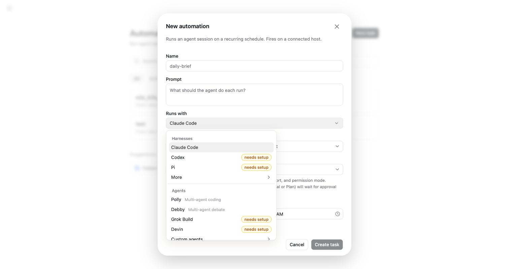

Harness 生態：pi、Claude Code、Codex 怎麼選
為何需要本章
第 16 章把你自己的機器接上來之後，Composer 中間那個 Runs with 下拉就不再只有一個選項。點開來會看到十一個框架加上四個代理，其中一大半後面掛著橘色的 needs setup 徽章。
這一章只回答三個問題：那些名字是什麼、為什麼有的能選有的不能、你該用哪一個。先講結論：你不需要全部設定，多數人長期只用一到兩個。
本書不逐一評測各框架的產出品質。事實庫記錄的是 Omnigent 這一側看得見的東西——目錄有哪些項目、設定狀態怎麼標、費用歸給誰。各框架自己的能力與計價，以它們自己的文件為準。
兩個區塊：框架與代理
Runs with 打開之後是分兩區的。這個分區不是排版好看，它代表兩種不同的東西。
框架（harness）：真正在你那台機器上跑起來、動手改檔案的 AI 編碼工具。Omnigent 自己不含模型，它把你的話轉給框架，再把框架的動作播回瀏覽器。
代理（agent）：下拉的第二區。它們在目錄裡另外歸一類，其中兩個項目自帶說明標籤——Polly 標 Multi-agent coding、Debby 標 Multi-agent debate。
同一份清單會在三個地方出現，長得一模一樣：Composer 的 Runs with（決定這個 session 由誰執行）、New automation 對話框的 Runs with（決定排程開火時由誰執行，第 10 章）、以及 Settings 的 Import sessions 頁（那裡是篩選條件，預設 All harnesses）。認得這份清單，三個畫面就一起認得了。

目錄裡實際有什麼
下拉不會一次全部攤開。第一層只放三個框架，其餘收在 More 的展開箭頭底下；代理區的最後一項則是 Custom agents 的展開箭頭。
| 位置 | 項目 | 數量 |
|---|---|---|
| 框架區，不用展開 | Claude Code、Codex、Pi | 3 |
框架區，收在 More 裡 | OpenCode、Cursor、Antigravity、Kiro、Qwen Code、Goose、Kimi、Hermes | 8 |
| 代理區 | Polly、Debby、Grok Build、Devin | 4 |
| 代理區最後一項 | Custom agents 展開箭頭 | 看你自己加了幾個 |
框架合計十一個。這個數字會隨版本變動，看到跟書上不同不必緊張——要記的是分區邏輯，不是數量。
橘色的 needs setup 是什麼意思
這是整章最容易誤解的一件事。needs setup 不是「Omnigent 不支援這個框架」，而是「你現在選的這台主機上，還沒把它設定好」。三個推論直接跟著出來：
- 狀態是逐台主機算的。同一個框架在 A 主機可用、在 B 主機標
needs setup，完全正常。在 Host picker 換一台機器，這份清單的標記就會跟著換一輪。 - 設定動作不在瀏覽器裡。要讓一個框架從
needs setup變成可用，做的是在那台機器上把該工具裝起來、登入好。事實庫沒有記錄任何在 Omnigent 網頁內輸入金鑰或帳密的畫面，本書因此不描述那樣的流程。 - 看不順眼可以整批藏起來。Settings 的
Appearance分頁有Hide unconfigured harnesses開關，打開之後這些項目會被隱藏，而不是標記。
藏起來只是視覺乾淨，那些框架既沒有被停用，也沒有被設定好。之後你換到另一台主機、發現某個選項「不見了」，第一件事就是回 Appearance 把這個開關關掉再看一次。
挑之前先問自己三個問題
- 這台主機上已經設定好哪一個？沒有標
needs setup的那些就是。這是最強也最省事的篩選條件——照能用的挑，比照喜好挑務實。 - 你要單一代理還是多代理？第一區是單一框架；第二區的 Polly 與 Debby 在目錄裡就標著 multi-agent，一個標協作寫程式、一個標互相辯論。
- 事後需不需要分得開帳？Usage 頁有
Cost by harness與Cost by model兩塊。同一件工作換不同框架各做一次，帳面上分得開（第 13 章）。
事實庫沒有記錄各框架之間的能力差異或價目，所以本書不給「哪個比較強」的排名。真的想比，就用第三點：實測兩次，看 Usage 的數字。那是你自己這台機器、你自己這種工作的答案。
實際挑一個來用
-
先確認主機，再看框架
Composer 底部三個 picker，第一個是 Host，名稱長得像
Pi Web ChatGPT (pi5)，前面有綠點表示線上。框架清單是跟著這台主機走的；主機選錯，後面看到的標記全部沒有意義。 -
打開 Runs with，分清楚兩個區塊
上半是框架、下半是代理。第一層只有三個框架，其餘要點
More展開，代理區底下的Custom agents同理。第一次打開花十秒把兩區看完，之後就不會再找不到東西。 -
挑一個沒有標 needs setup 的
標了的選下去也不會動起來，缺的東西在主機那一側。如果你非用某個標著
needs setup的不可，那是要到那台機器上做的事，不是在這個下拉裡能解決的。 -
把 Model 與 Effort 留在 Default
這兩個下拉預設都是
Default。官方說明寫得很清楚：Leave on Default to use the agent's configured model, effort, and permission mode.——留著不動，就是用該框架自己已經設好的那一組。還不熟的時候，這是最不容易出錯的選擇。 -
用同一句話試兩個，再回 Usage 對帳
開兩個 session、下一模一樣的指令、換框架跑，這比讀任何評測都準。隔天到 Usage 把期間切到
30 days，看Cost by harness，兩個框架的花費會分開列。 -
把用不到的藏起來
確定長期只用一兩個之後，到
Appearance打開Hide unconfigured harnesses。清單會瞬間變短，往後每次開 session 都少一次猶豫。
怎麼確認做對了
五個都成立，這章就算過了：
Runs with打得開，而且你分得出上下兩區各是什麼- 你打算用的那一個沒有橘色的
needs setup - 送出一句話之後真的有回覆（沒有的話，第 18 章專門處理）
- Usage 的
Cost by harness裡出現了那個框架的名字 - 打開 New automation 對話框，那裡的
Runs with是同一份清單
混用時的三件事
不同 session 用不同框架是常態，但有三個地方會咬人。
一、Default 的內容會跟著框架換
Model、Effort、Permission mode 預設都是 Default，而 Default 的意思是「用該框架自己設定好的那一組」。所以換了框架，這三欄的實際內容就換了，即使畫面上三個字沒變。覺得「同樣設定怎麼行為不一樣」的時候，多半就是這個原因。
二、排程用的框架不能挑會停下來問的模式
New automation 對話框底下那段話值得整段記住：Automations run unattended, so a prompting mode (Manual or Plan) will wait for approval that never comes.排程時沒有人在旁邊，挑到會停下來等核准的模式，任務就卡在那裡直到你自己去看。
三、一個 session 綁一個框架
事實庫沒有記錄「session 進行到一半換框架」的介面。要換就開新的 session，這樣 Usage 的 Cost by harness 也切得乾淨。
故障排除
- 下拉裡找不到某個框架：兩個地方看。第一，
Appearance是不是開了Hide unconfigured harnesses；第二，它是不是收在More或Custom agents的展開箭頭裡沒點開。 - 選項標著 needs setup，選了沒反應：這台主機上還沒把那個工具設定好。要處理就得回到那台機器上安裝並登入該工具，網頁裡沒有可以補設定的地方。
- 換一台主機之後清單標記整個變了：正常，不是壞掉。
needs setup是逐台主機判定的，換機器就換一份狀態。 - 同樣的問題，換個框架答案差很多：先看
Model與Effort。兩邊都顯示Default不代表兩邊一樣，Default指向的是各自框架設定好的模型與力度。 - 排程用某個框架永遠跑不完：檢查
Permission mode。Manual或Plan這類會提示的模式，在無人值守的排程裡等的是一個永遠不會來的核准。 - Usage 的 Cost by harness 少了一個名字：先把期間從
7 days切到30 days或All time再看。期間內沒有花費的框架不會出現在那一塊。
固定來源
本章的產品邊界說法以下列來源的該 commit 內容為準。
框架與代理的目錄、needs setup 徽章、Hide unconfigured harnesses 開關與各欄位的原文提示，來自 2026-09-09 對正式站的實機記錄，整理在本倉庫的 docs/research/ui-facts-2026-09-09.md。
常見問題
十一個框架我全部都要設定嗎？
不用，而且不建議。每設定一個，就多一組要維護的帳號與一個會過期的登入。先讓一個能穩定跑起來，真的遇到它做不好的事再加第二個。清單長不代表你要全用。
代理區的 Polly、Debby 跟上面那些框架差在哪？
目錄把它們分在不同區，而且兩個項目自帶標籤：Polly 是 Multi-agent coding、Debby 是 Multi-agent debate，字面上就是多個代理協作或互相辯論。更細的行為差異事實庫沒有記錄，本書不臆測——想知道就各開一個 session 用同一句話試，然後比結果與 Usage 的花費。
我可以自己加一個進去嗎？
代理區最後一項是 Custom agents 的展開箭頭，代表這個清單容得下自訂項目。但建立自訂代理的完整流程不在本站的實機記錄範圍內，本書不寫步驟。做這件事之前，先確定手上這台主機的框架已經能穩定跑。
為什麼同一個框架換一台電腦就要重設一次？
因為框架是裝在機器上、用那台機器的帳號登入的。Omnigent 只是派工的一方，它不保管那些登入。這也是 needs setup 逐台主機標記的原因：它報告的是那台機器的實情，不是你的帳號設定。
換框架會不會影響已經開好、跑到一半的 session？
不會。框架是在開 session 的時候決定的，已經開著的照舊。事實庫沒有記錄中途換框架的介面，要換就開新的一個；分開跑，Usage 的 Cost by harness 也才切得乾淨。